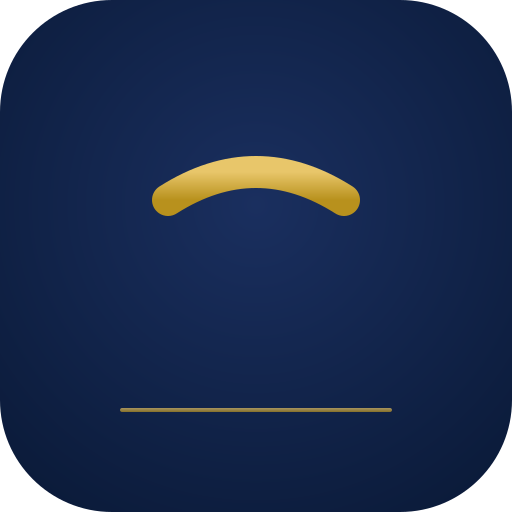
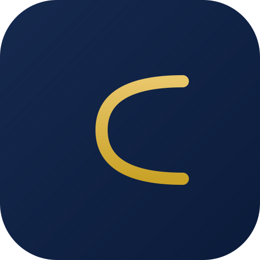
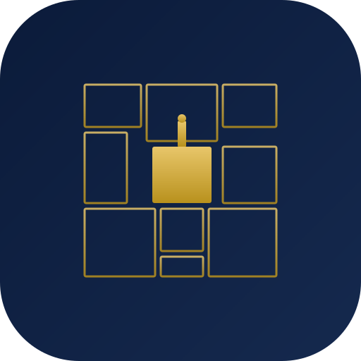
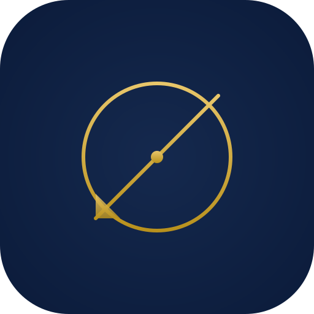

Comparaison côte à côte des 4 directions design proposées. Chaque logo est affiché à 4 tailles pour valider le rendu en favicon (32px), card UI (96px), app icon (192px) et large (256px). Couleurs brand respectées : navy #0B1B3A, gold #C9A227, gold clair #E8C66A.
Lettre Tifinagh "Yach" — alphabet officiel amazigh constitutionnalisé en 2011. Symbolise l'identité marocaine moderne sans cliché orientaliste. Reconnaissable à 32×32, esthétique géométrique pure.

32px faviconStyle maisons sophistiquées (Hermès, Cartier). Le "C" (Cité) embrasse le "T" (Territoire). Texture diagonale subtile en arrière-plan pour la profondeur. Adapté presse et print premium.

32px faviconPlan d'une médina marocaine stylisée : carrés irréguliers (riads, souks) + carré central plein avec minaret (mosquée/forum). Concept fort lié au métier (urbanisme territorial) sans tomber dans le folklore.

32px faviconCercle parfait (compas) + ligne diagonale (équerre) + petit triangle d'angle. Référence explicite aux outils d'architecte. Le plus minimaliste des quatre, lisible à toute taille, idéal pour signature email + watermark print.

32px favicon